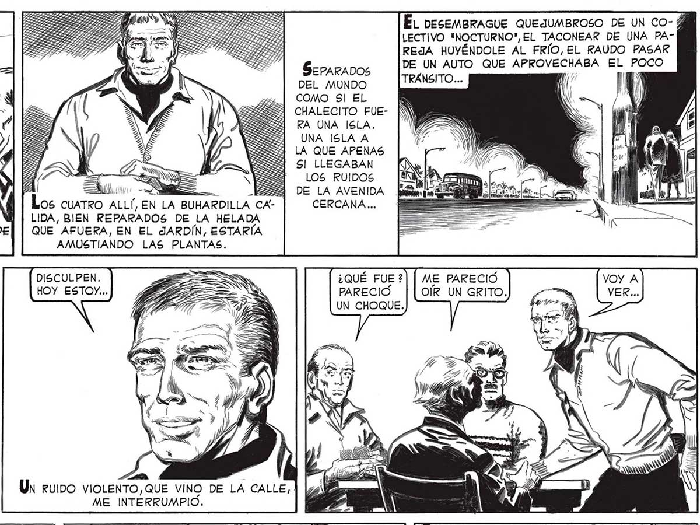
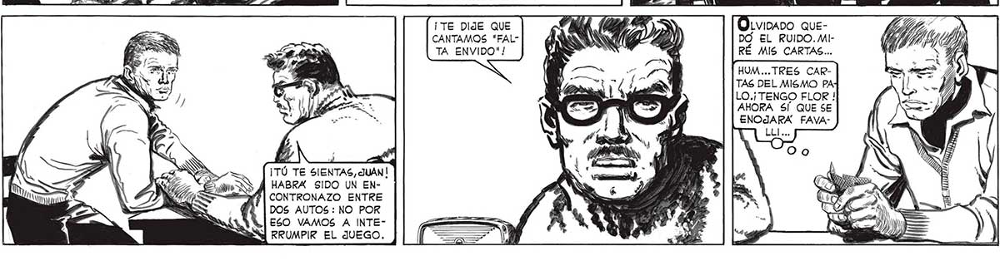

ÉL DESEMBRAGUE QUEJUMBROSO DE UN CO- Á LECTIVO "NOCTURNO", EL TACONEAR DE UNA PAREJA HUYÉNDOLE AL FRÍO, EL RAUDO PASAR DADOS da QUE APROVECHABA EL POCO DEL MUNDO cl COMO SI EL CHALECITO FUERA UNA ISLA. UNA ISLA A LA QUE APENAS SI LLEGABAN y | NES Los ruiDos [Acme e - _ESS5] DE LA AVENIDA E Los cuaTRO ALLÍ, EN LA BUHARDILLA CA- CERCANA... LIDA, BIEN REPARADOS DE LA HELADA QUE AFUERA, EN EL JARDÍN, ESTARÍA AMUSTIANDO LAS PLANTAS. YA VA, FAVA ... He rv P É A DAR LAS CARTAS.AUNQUE SIN DEJAR DE DISCULPEN. ¿QUÉ FUE ?| | ME PARECIÓ HOY ESTOY... E PARECIO | [OÍR UN GRITO. S UN CHOQUE. De NUEVO TUVE QUE VOLVER A LA REALIDAD PROSAICA DEL TRUCO. ¿ESTAS EN BABIA, JUAN ? ¡HEMOS CANTADO "FALTA ENVIDO" ! AS : Un ruipo viOLENTO,QUE VINO DE LA CALLE)! ME INTERRUMPIO. ¡TE DIJE QUE CON OLVIDADO QUECANTAMOS "FAL- NENA DO EL RUIDO. MITA ENVIDO"! ) > y RÉ MIS CARTAS... HUM... TRES CARTAS DEL MISMO PA LO.¡ TENGO FLOR ! AHORA SÍ QUE SE ENOJARA FAVAse > ¡TÚ TE SIENTAS, JUAN | HABRA SIDO UN ENCONTRONAZO ENTRE DOS AUTOS : NO POR ESO VAMOS A INTERRUMPIR EL JUEGO.

